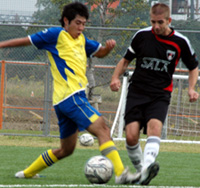
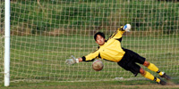
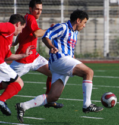
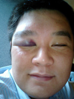

Celts Hold Off France to Gain On Leaders.
Misato, Sunday 26th October
Celts rocked up to their 4th game of the season having had a mix bag of results in the previous 3 games, beating Geckoes 2-1 then a 1-1 draw with BFC before succumbing to a 0-3 defeat to YCAC. more ...
SY.
Panthers Perform Purrfectly!
Misato, Sunday 26th October
3 weeks in a row we have made our way out to Misato and all we received was a poxy two points from the first two games. Not that we were grumbling mind, we were happy to take on the top team and come away with a draw and despite a hard fought game a draw against Sun Utd was a blessing. So, that brings us to this week’s game. more ...
LR.
Hibs' Brazilians on Fire.
Hodogaya koen, Saturday 25th October
The Hibs have an unwritten rule that if we score 10 against a team we don’t write a match report. Once it reaches that level, the scoreboard really says it all and reflecting on missed chances in the report adding something along the lines of “it should have been 15”; is not going to go down well. more ...
BC.
Skid Row
|  |
|
Toby's single goal wasn't enough for Sala.
|
Soga, Saturday 18th October
Unfortunately, not the classic metal band of the 90s, fronted by long-haired rock god Sebastian Bach, but the place where Sala FC's season, thus far, has ended up. In a big pile of man poo would be another way to describe that place.
Having started the season with an absolute gubbing at the hands of YCAC, Sala had scraped together two victories against Saitama Jets and BEFC, played out a dismally flat draw with Swiss Kickers, lost a few more guys to injury and irritated the TML with a scandalous lack of match reports!! What more could go wrong??? Defeat to those lovely lads, the Wall Street Geckoes?? Surely not. more ...
ST.
BFC Fire Seven Past Hapless Swiss
Hachioji Park, Saturday 18th October
Last week was a brutal five nil battering of the embassy attaches, this week a merciless seven nil spanking of the Swiss Kickers.
Like Capello’s England, “they’re clearly not the finished article.” I don’t want to fall for the old English sports writer’s trap of hyping an average team after one or two results against mediocre sides like Kazakhstan, but it is quite thrilling to imagine what kind of performances BFC could be capable of when they really hit their stride. more ...
PM.
Shane Held by Hungry Panthers
Misato, Sunday 19th October
Every time we play at Misato I feel like I have to begin preparations to get there at least three days in advance, getting the route to the station, an ordnance survey map for the route from the station and a GPS just in case. Still most of the team arrived on time, sadly we started (and finished) the game with a man down, not the ideal way to face the team at the top of the division. more ...
LR.
Re-Upholstered Old Boys just Fail to Shine
|  |
|
Just out of reach, Oldboys keeper Kouka just fails to keep out Jorge's last minute PK.
|
Misato, Saturday 18th October
In a sexy new kit that would have drawn admiring gasps from their female fans if such creatures existed, the Albion Old Boys were doing a very good impersonation of classy footballers both before and during Saturday's encounter with Division Two's other newly-promoted team. But the Old Boys came away from Misato with no points for either style or execution as FC International converted a late, late penalty to nick a 2-1 win with the very last kick of the game. more ...
TC.
Embassy Battered by the Other British Club
ASIJ, Monday 13th October
(Woof! Just read Evan’s match report. Fine work sir. I’d like a large glass of whatever he’s been drinking, please barkeep!
I think we’ll just keep it simple here, shall we…) The rescheduling of last weekend’s match from the Saturday to the Monday unfortunately saw an already injury hit BEFC squad further robbed of regular first team players. This meant that about half of those who made it to ASIJ for the clash with BFC were making their season (and in several cases, team) debuts. more ...
TM.
Yes We Can!
|  |
|
BEFC's Alex Baubel tries to out-pace the BFC midfield to no avail in the all British Derby.
|
ASIJ, Monday 13th October
*Note to self; Don't start with "It was one of those days...definite No No. style? lets see, a hypothetical high school history essay question. can't touch, that's a classic. invent a fictitious player or team that hallucinates about scoring goals the night before at work but never replicates that form on the pitch. maybe. how about pay homage to a great writer by writing in that book's style. nice. milan kundera has been in the news this week.naah too hard..don't have nuff talent... though that opening about Nietzche's question about something along the lines of if life happens an infinite number of times, do some actions take less meaning(lighter) or more of a burden(heavier)?, not sure i understood it correctly but prob could be applied to "If Dan misses sitters over and over, and over and over and over, does it become easier for him to take loads and loads of schtick and thus something lighter for him so he is not bogged down by it or does it start to weigh on his young shoulders and possibly lose the number 11 shirt to someone else? more ...
EG.
Panthers Keep Sun in the Shadows
Misato, Sunday 12th October
A determined display of old-fashioned football on a hot Misato day saw the Panthers climb into the Top 5 jungle of Division 3. Overhead kicks from outside the box; crazy red cards; diving headers; double turns on antique sixpences; pitch invasions and streakers – there was none of that in this mid-table scrap that ended honours even. more ...
DK.
Missed Chances…
Hanno, Saturday 11th October
Saturday’s late game vs newly promoted Lions FC had an air of uncertainty lingering prior to kickoff. Coming into the game Lions had only played the sole game vs France and had emerged victorious. more ...
ET.
|  |
|
DEFC's Captain Toshi, takes one for the team as they defeat Zion.
|
Our Men in Todoroki
Todoroki, Sunday 5th October
The Dutch convened at the badlands of the Musashi Kosugi ground, optimistically renamed Todoroki by some joker, for a TML 2 classic with Zion. A late (6.30 PM) kickoff added to the bleakness of the location and to top it all off a nice early Winter rain graced the area just as we kicked off. more ...
LL.
Lions' Eye for Talent
Misato, Sunday 5th October
Lions first Division 1 match at last kicks off, and with a crucial society event, Lions were missing a handful of key players, including the reliable left back Mo Birkia, his dribbling maestro of a brother - Abu, the talented tall striker Zuhair, the Captain Gaafar Somi, and the super keeper - Orlando (and more!).... more ...
HS.
|